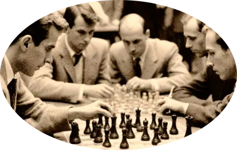

Чтобы поддержать Международный васюкинский турнир посетите лекцию на тему:
«Плодотворная дебютная идея»

и Сеанс одновременной игры в шахматы на 160 досках гроссмейстера О. Бендера
Место проведения:
Клуб «Картонажник»
Дата и время мероприятия:
22 июня 1927 г. в 18:00
Стоимость входных билетов:
20 коп.
Плата за игру:
50 коп.
Взнос на телеграммы:
100 руб. 21 руб. 16 коп.
Этапы преображения
Васюков
Будущие источникиВасюков
обогащения васюкинцев
Строительство железнодорожной магистрали Москва-Васюки
Открытие фешенебельной гостиницы «Проходная пешка» и других небоскрёбов
Поднятие сельского хозяйства в радиусе на тысячу километров: производство овощей, фруктов, икры, шоколадных конфет
Строительство дворца для турнира
Размещение гаражей для гостевого автотранспорта
Постройка сверхмощной радиостанции для передачи всему миру сенсационных результатов
Создание аэропорта «Большие Васюки» с регулярным отправлением почтовых самолётов и дирижаблей во все концы света, включая Лос-Анжелос и Мельбурн